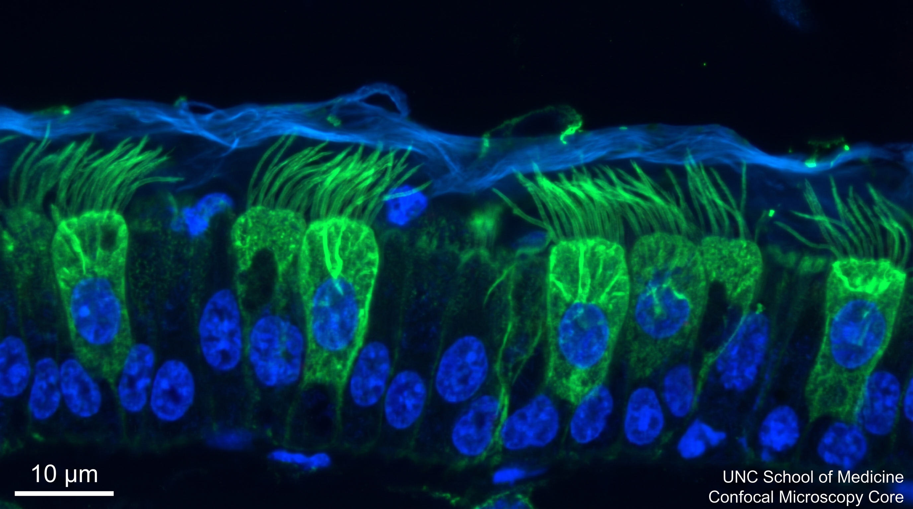
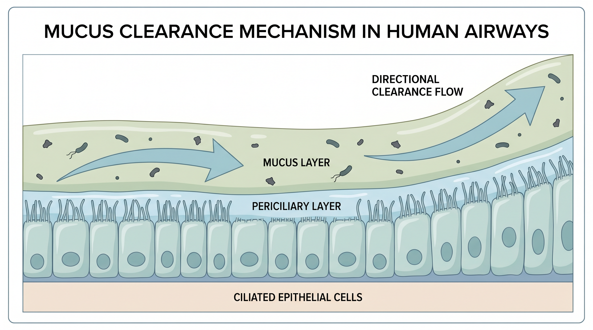

Advancing the understanding of airway mucus biology, mucociliary clearance, and cystic fibrosis pathogenesis through rigorous biophysical research.
Explore Our ResearchAbout Our Lab
The Button Lab investigates the biophysical mechanisms governing airway mucus clearance—a fundamental defense system whose failure underlies cystic fibrosis, chronic bronchitis, and bronchiectasis.
We combine quantitative biophysics, cellular physiology, and computational modeling to understand how the lung maintains a precisely hydrated periciliary layer and a properly organized mucus layer, and why these structures collapse in muco-obstructive diseases.
Our work spans from single-molecule interactions to human clinical studies, reflecting our conviction that the most impactful science bridges scales and disciplines.

To define the mechanical and chemical rules that govern mucociliary transport, translate those rules into actionable therapeutic strategies, and train the next generation of scientists who will advance respiratory biology. We believe that progress in treating lung disease requires first understanding normal physiology at a mechanistic level—and that deep mechanistic insight enables transformative, not merely incremental, therapeutic advances.
Our Focus
Interconnected research themes addressing the fundamental mechanisms of airway mucus clearance.
Investigating how CFTR dysfunction leads to thickened, adherent mucus that impairs clearance and drives chronic infection.
Learn more →Understanding the precise regulation of ASL volume and composition, and how hydration status governs clearance efficiency.
Learn more →Quantitative measurement and modeling of the mechanical processes underlying mucus transport.
Learn more →Defining how ciliary dysfunction, mucus properties, breathing, and gas-liquid transport determine clearance in ciliopathies.
Learn more →Determining how hyperconcentrated plugs remodel airways and developing combination therapies to dissolve and clear them.
Learn more →Developing and validating pharmacological and physical interventions to restore mucus clearance.
Learn more →Integrating experimental data with quantitative models to predict mucus transport behavior.
Learn more →Our landmark discovery of the brush-like structure that separates mucus from the airway epithelium.
Learn more →Scientific Impact
Landmark contributions that have reshaped understanding of airway mucus biology.
Science — Discovered the brush-like structure of the periciliary layer that prevents mucus penetration.
PNAS — Elucidated biophysical mechanisms governing mucus adhesion and cohesion in cough clearance.
Science Advances — Unified understanding of airway defects in CF through gland dysfunction.
Journal of Clinical Investigation — Established tidal-breathing-driven, cilia-independent gas-liquid transport as a third mechanism of airway mucus clearance, significant when ciliary function is impaired.
Explore our detailed research areas, browse our publications, or get in touch to discuss collaboration opportunities.